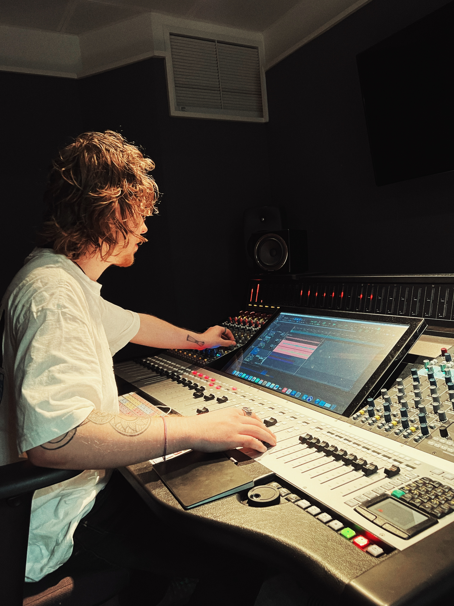
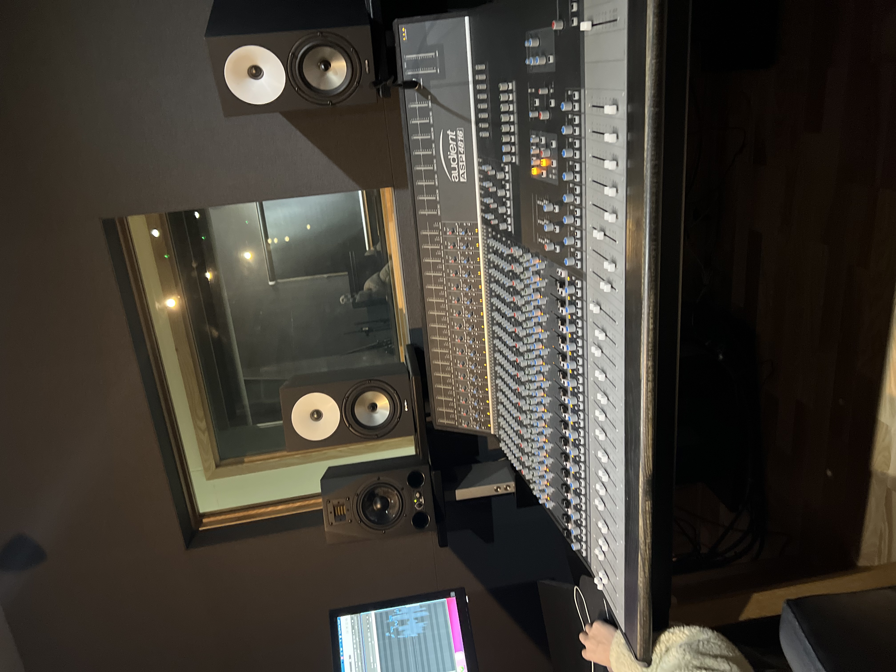
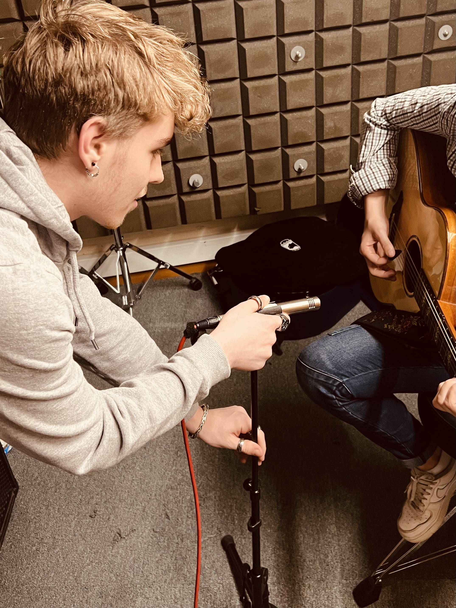
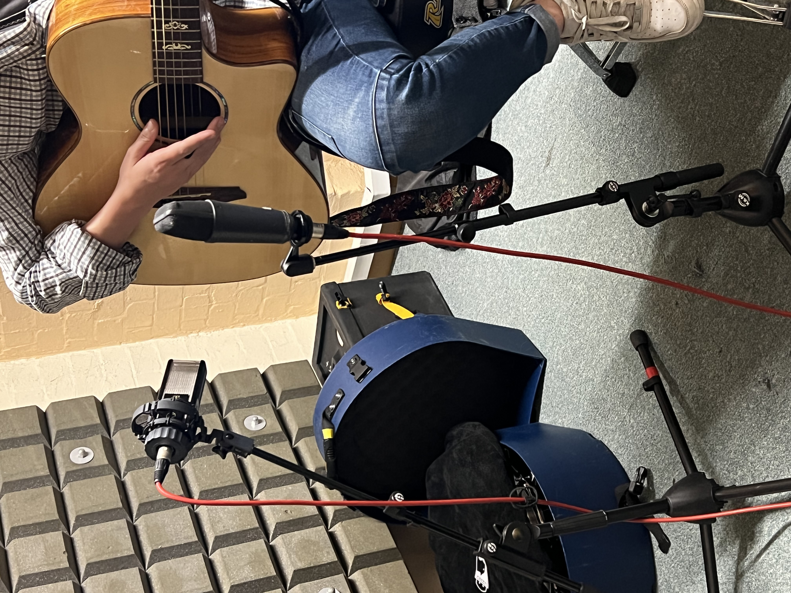
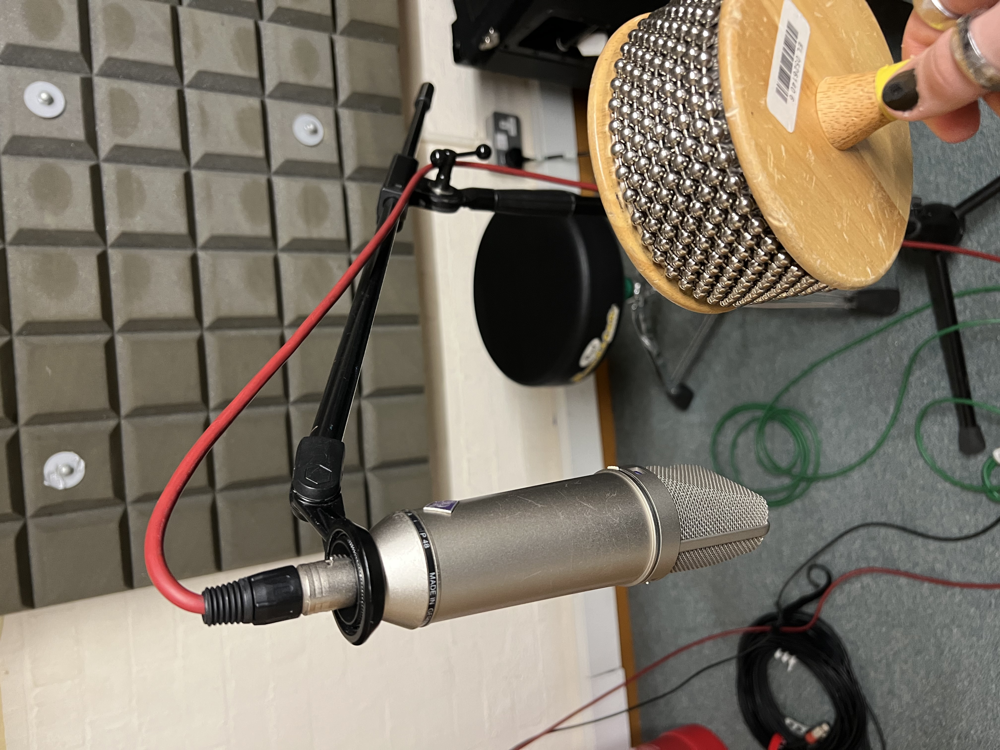
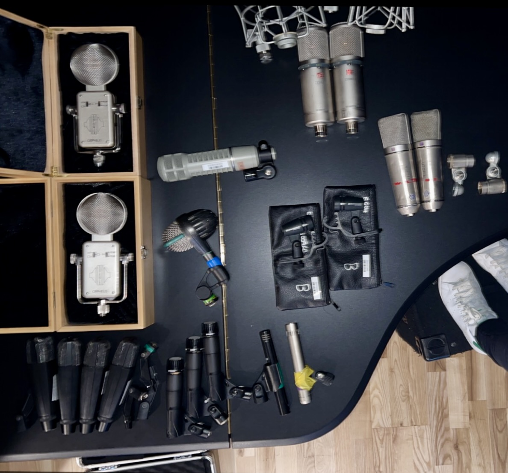
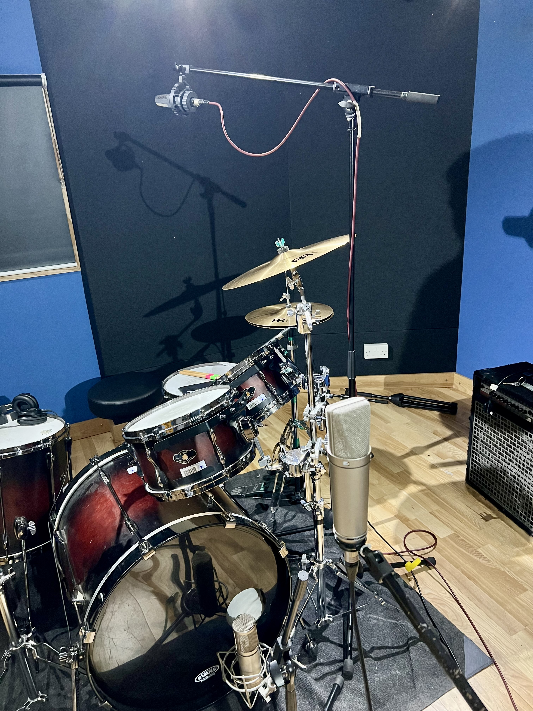
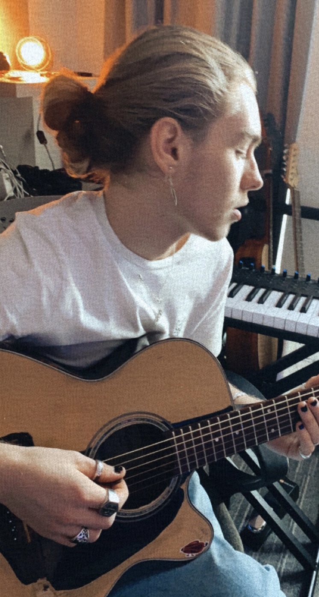

Gallery


Tools
Pro Tools, Logic Pro, Adobe Audition and DaVinci Resolve Fairlight.
iZotope RX, Waves Clarity, dialogue cleanup, de-noise, de-click and ambience matching.
FabFilter, Waves, Melodyne, Auto-Tune, Ozone and analogue-style EQ/compression workflows.